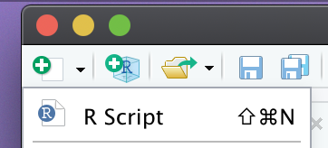
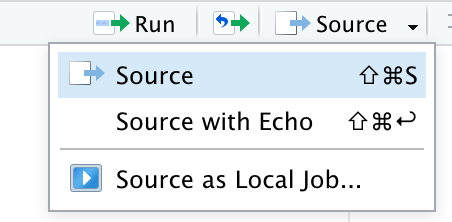

Chapter 3 Pre-Activity
In this pre-activity, we will go over some R Basics. At the end of this chapter, you will write your first R script!
3.1 Learning objective
- Define objects, operators, functions, and R packages.
- Use the built-in RStudio help interface to search for more information on R functions.
- Run commands in the console and from a script.
- Demonstrate how to provide sufficient information for troubleshooting with the R user community.
- Be able to write R scripts in a reproducible manner.
3.2 R Scripts
Below we summarize some R basics, but to find out more about R Scripts please review the link for some tips about:
Code Completion
Find and Replace
Extract Function
Comment/Uncomment
Executing Code
To open your first .R file or R Script, click the paper logo with the green plus sign OR “File” -> “New File” -> “R Script”.

R Scripts are used to document the code you use in your project. These scripts can be used as a reference for yourself and allow others to reproduce your analysis. Learn more about running code from R Scripts in section 3.4.
| >
> Naming R Scripts > > - Make sure you R Scripts file names are meaningful and end in .R. > > - Avoid using special characters in file names. Instead use numbers, letters, dashes (-), and underscores (_). > > - If files should be run in a particular order, prefix them with numbers. For example, 01_setup.R. > |
3.3 Important Terms
object: is what data is stored in your R environment. In the R programming language, this term is interchangeable with variable.
- Objects will have classes (eg. numeric, character, factor, logical)
## [1] "numeric"operator: assignment operators assign a value to an object. Assignment operators may be a back arrow <- or an equal sign =.
- Quick operator: For PC users, typing Alt + - (push the keys at the same time) will write
<-. On a Mac, typing Option + - (push the keys at the same time) does the same.
command: the complete line shown above can be called a command, here an object is assigned a value. This value can be directly assigned (eg. x <- 10) or calculated through a function (see above).
function: a function is a set of processes that you can apply to an object or group of variables. .
R has base functions, or functions that come with it, like round:
## [1] 3If you need help with a specific function, let’s say plot(), you can type:
You can also write your own functions. For example, if we have a weight in kilograms that we want to convert to pounds and we want to round the converted weight, we could write are own function to do this. Here the function we made is called convertkg2lb, this function will first convert kg to lb, then round this value, and finally return the rounded weight in lb. .
convertkg2lb <- function(weightkg){
weightlb <- weightkg*2.20462
rounded_weightlb <- round(weightlb)
return(rounded_weightlb)
}
weight <- 3.4759875
convertkg2lb(weight)## [1] 8This function may not be very useful to write when we only have one weight to convert, however if you need to convert and round 100 weights, you can reduce the number of lines of codes in half by using a function.
R package: is a group of functions. Offical R packages are avaliable via CRAN. For the class activity, we will be using packages from Tidyverse.
3.4 Running Code
You can type commands directly into the console and press Enter to execute those commands. Sadly, commands run in the console will be forgotten when you close the session.
To document your code and allow for reproducibility, it is better to type the commands we want in the script editor, and save the script. RStudio allows you to execute commands directly from the script editor by using on PC the Ctrl + Enter shortcut, and on Macs, Cmd + Return.
Individual lines of code can also be run by clicking the “Run” button or you can run the whole script by clicking “Source”.

You can find other keyboard shortcuts in this RStudio cheatsheet about the RStudio IDE.
3.5 Basic Troubleshooting
1. Read the error message
- For example, if your message reads “incorrect field specification”, check the function (?function) to make sure you specified the correct variables.
2. Google the error message
- Sometimes the error message will be confusing and reading it will not provide any insight. This is when google is helpful!
- If your error message is super generic, also include the name of the function or package when googling.
3. Ask for help
- If google did not answer your question, the next step would be to ask your classmates and/or instructor for help.
- Include the sessionInfo() - which prints the version of R, the packages loaded, and other useful information.
Where to ask for help?
First start by ask your classmates and instructor.
Stack Overflow: Check out this awesome blog post on “How do I ask a good question?” before posting.
How to ask for R help: Make sure you are asking good questions!
3.6 Reproducibility
Documenting steps in your work flow should be done in a way that is reproducible. There are many R style guides to guide how you annotate and organize your code - check out the tidyverse style guide
Titles
At the start of each .R script, your header should define the purpose of your code. This header should include the purpose of the script (why, what), as well as when the script has been updated. It should also include your name.
Sections
I always start my scripts by loading packages (if the script includes any packages), this allows any lines to follow to use the functions in these packages.
Each section should have a “#” hashtagged title that defines what the section includes. If a line in your script includes a hashtag, it is treated as text and not code. Following the initial title, you may want to include “##” followed by a description.
3.7 Basic Script Example
Below is a basic script. Open your own R script and write this script in your new file. Next, run each line.
Activity Goals
- Write your first R script. Name this script “BasicScript.R”.
- Practice running lines of code.
- Be able to identify classes of objects.
- Identify what each function does and add comments to your script to indicate what each line does.
# Basic Script
## This is a basic script example
## 2020-10-02
## Name
# Objects
## Define objects of different classes
weight <- 3
class(weight) # numeric
weight <- 3L # integer
weight <- 3.5 # double
weight <- 3+2i # complex
hair <- TRUE # logical
hair <- "yellow" # character
hair = "brown"
# List
## Create a list of character
sites <- c("a", "b", "c", "d")
## Create a list of numbers
areas <- c(5, 12, 10, 11)
# Slice
### "give me a part of something"
### practice selecting from the lists
sites[1:3]
areas[3]
# Combining list
## c or combined
combine <- c(sites, areas)
combine
## rbind or row bind
combine_rbind <- rbind(sites, areas)
combine_rbind
## cbind or column bind
### Here you have a command surrounded by parentheses -
### What happens? Run this line to find out!
(combine_cbind <- cbind(sites, areas))
combine_cbind
# Dataframes
## making a data frame
(xy <- data.frame(sites, areas))
xy
## Explore a data frame
str(xy)
head(xy)
View(xy)
xy$areas
class(xy$areas)
length(xy$areas)
nrow(xy)
ncol(xy)Test yourself: You now should be able to answer Question 2 - 4 in the assessment.